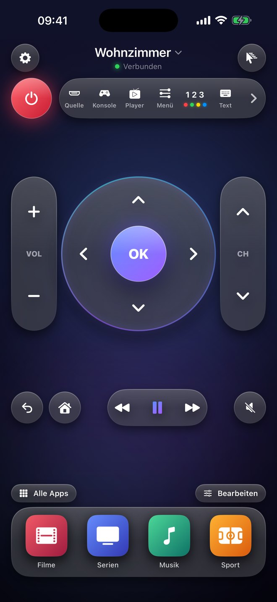
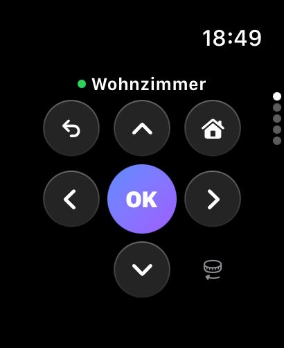
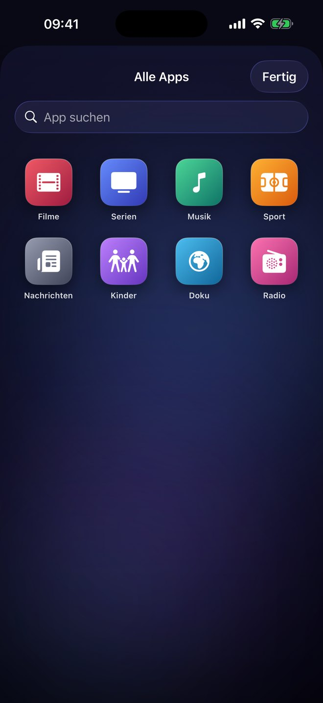
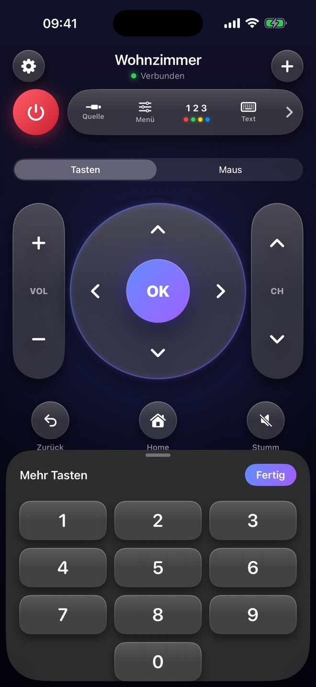
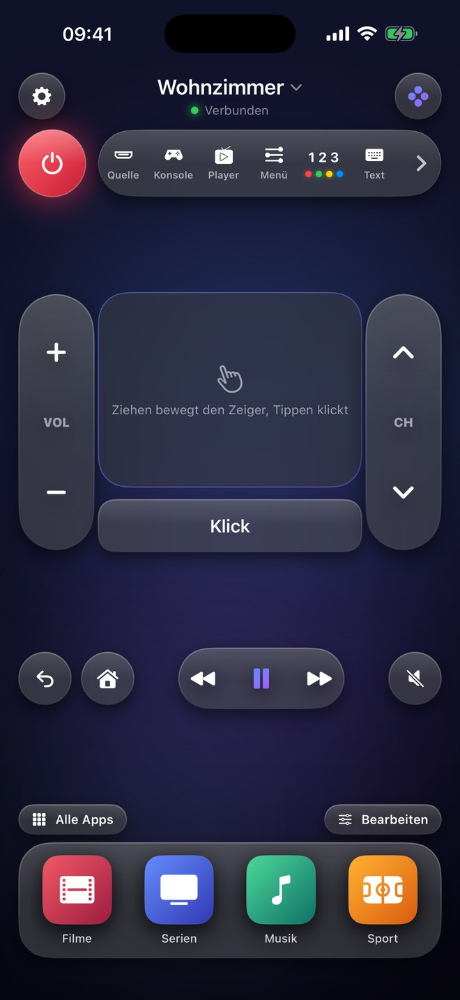
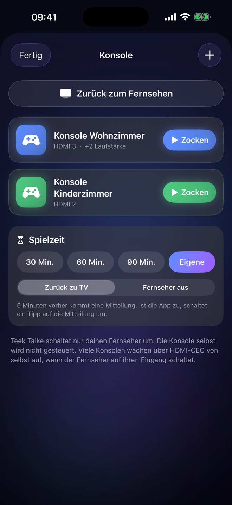
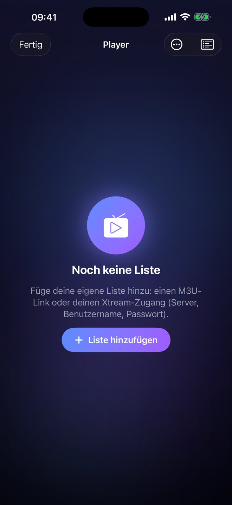
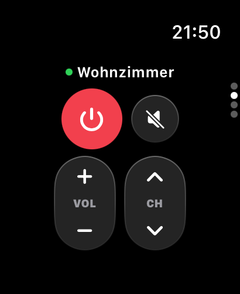
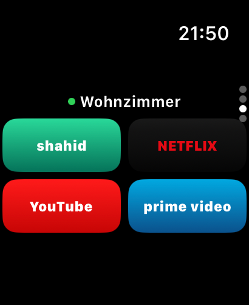

Drück drauf.
Dein Fernseher reagiert.
Teek Taike macht dein iPhone und deine Apple Watch zur Fernbedienung. Tasten, die sich anfühlen wie echte Tasten, deine Apps mit einem Tipp auf dem großen Bildschirm und ein Player für deine eigenen Listen.
Passt mein Fernseher?Mehr sehenBald im App Store für iPhone und Apple Watch.


Wie eine echte Fernbedienung.
Nur schöner, und immer dabei. Alles, was du am Abend brauchst, auf einem Bildschirm, ohne Scrollen.
Tasten zum Anfassen
Lautstärke und Programm sind lange Wipptasten, die beim Drücken kippen. Das Steuerkreuz gibt nach, jede Taste klickt spürbar.
Apps mit einem Tipp
Deine Streaming-Apps und alle anderen Apps deines Fernsehers direkt starten. Deine Lieblinge liegen unten in der Leiste.
iPhone-Tasten als Lautstärke
Solange die App offen ist, regeln die Lautstärketasten am iPhone den Fernseher.
Siri und Kurzbefehle
„Lauter mit Teek Taike“, „Fernseher aus mit Teek Taike“. Auch im Kontrollzentrum und als Schlaf-Timer über eine Automation.
Touchpad und Tastatur
Für die Suche in Apps und den Browser am Fernseher: tippen statt Buchstaben einzeln auswählen.
Deutsch, Englisch, Französisch
Die App spricht die Sprache deines iPhones. Mehrere Fernseher wechselst du mit einem Wisch.
Sofort der richtige Fernseher
Beim Öffnen sucht die App den Fernseher, der an ist und am schnellsten antwortet, und verbindet sich mit ihm. Lässt sich in den Einstellungen abschalten.
Zocken mit einem Tipp
Fernseher an, richtiger HDMI-Eingang, passende Lautstärke: ein Tipp auf „Zocken“ erledigt alles. Mit „Zurück zum Fernsehen“ geht es wieder aufs Programm. Auch per Siri: „Zocken mit Teek Taike“.
Spielzeit für Kinder
45 Minuten einstellen, 5 Minuten vorher kommt eine Mitteilung, danach schaltet der Fernseher zurück aufs Programm oder aus.





Ein Player für deine eigenen Listen.
Trag deine IPTV-Liste ein, als M3U-Link oder mit Server, Benutzername und Passwort deines Anbieters. Live, Filme und Serien landen sortiert in drei Bereichen.
Live, Filme, Serien
Kategorien, Favoriten und Zuletzt gesehen. Ordner kannst du selbst benennen, einfärben und sortieren. Bei Live-Sendern siehst du, was gerade läuft.
Wie eine Streaming-App
Doppeltipp spult, Wischen wechselt den Sender, am Rand regelst du Helligkeit und Lautstärke. Audio und Untertitel wählst du in einem eigenen Fenster, mit AirPlay und Bild in Bild.
TV-Programm mit Archiv
Das Programm aller Sender als Raster. Hat dein Anbieter ein Archiv, schaust du verpasste Sendungen einfach nach.
Suche über alles
Ein Suchfeld für Sender, Filme und Serien.
Auf den großen Bildschirm
Per AirPlay oder im TV-Modus: Der Fernseher zeigt nur das Video, das iPhone wird zur Fernbedienung mit Touchpad.
Mehrfachansicht
Zwei oder vier Sender gleichzeitig, der Ton kommt vom angetippten.
Kindersicherung
Kategorien für Erwachsene sind gesperrt, eigene Ordner sperrst du mit PIN.
Leer und sauber
Teek Taike enthält keine Sender, Filme, Serien oder Listen und vermittelt keine Anbieter. Du spielst nur ab, was du selbst rechtmäßig erhalten hast.
Am Handgelenk.
Mit der Apple Watch bleibt das iPhone in der Tasche. Die Krone regelt die Lautstärke, ein Wisch bringt dich zu Ein/Aus, Programm und deinen Apps.


Welche Fernseher?
Fernseher und iPhone müssen im selben WLAN sein. Beim ersten Verbinden fragt der Fernseher einmal „Zulassen?“, danach geht alles von selbst.
Samsung Smart TV
Mit Tizen, ungefähr ab Baujahr 2016. Getestet mit einem Samsung QLED von 2025. Zum Einschalten über das WLAN am Fernseher „Mit Mobilgerät einschalten“ aktivieren (Einstellungen › Allgemein › Netzwerk › Experteneinstellungen).
Weitere Marken
Weitere Fernseher kommen per Update, sobald sie an echten Geräten getestet sind.
Spielkonsolen über HDMI
Teek Taike schaltet deinen Samsung auf den HDMI-Eingang deiner Konsole. Die Konsole selbst wird nicht gesteuert.
Apps gehören ihren Anbietern
Die Apps laufen auf deinem Fernseher. Teek Taike startet sie nur und ist nicht mit den Herstellern oder App-Anbietern verbunden.
Deine Daten bleiben bei dir.
Kein Konto, keine Werbung, keine Analyse, kein Tracking. Die App spricht direkt mit deinem Fernseher im WLAN.
Was gespeichert wird
Nur auf deinem iPhone: Name und Adresse deiner Fernseher und die Freigabe, die der Fernseher beim „Zulassen“ vergibt. Fernseher entfernen oder App löschen, und alles ist weg.
Die einzige Verbindung ins Internet
Für die App-Symbole fragt Teek Taike die öffentliche App-Store-Suche von Apple nach dem Namen der App. Daten über dich werden nicht mitgeschickt.
Deine Listen
Link, Server und Benutzername deiner Listen bleiben auf deinem iPhone, das Passwort liegt im Schlüsselbund. Die Wiedergabe läuft direkt zwischen deinem iPhone und deinem Anbieter, nicht über uns.